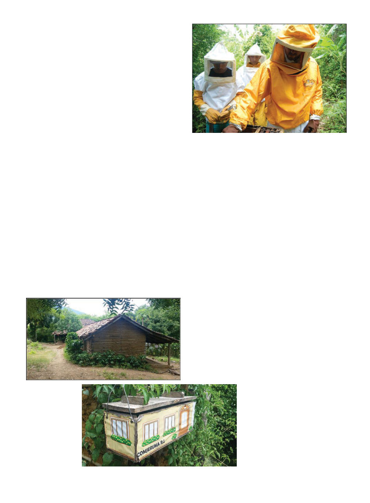

September 2019
1037
youth of Nicaragua. When he died
suddenly in 1990, the Fabretto organi-
zation continued to operate the many
schools and projects he had run. Padre
Fabretto himself is currently winding
his way through the slow process of
being sainted.
Marcus, my Fabretto liaison, gave
me a tour of their Somoto headquar-
ters, which was also a primary school,
and then we headed out to visit some
beehives! A few kilometers out of
town, by a mud adobe house, we
pulled on yellow bee suits as chick-
ens pecked around us. And then …
we pulled on second bee suits over
the first. Yes. Africanized bees.
From my personal experience,
purebred African bees in Africa are
not as bad as the hybridized African-
ized bees I became extremely familiar
with in California. The bees in Africa
are certainly more aggressive than
good gentle European stock, and I al-
ways approach them fully suited, but
I can usually take off my gloves if not
the veil, while around me beekeepers
are usually wearing all kinds of hap-
hazard homemade suits. Approach-
ing an Africanized hive in California
on the other hand, I always wear a
full suit with duct tape over the zip-
pers and ankles and wrists, and of-
ten that is not sufficient as the angry
whirlwind of bees pelts my veil like
thrown gravel, and by sheer force of
will bees end up in my suit anyway.
No one has ever proposed wearing
two layers of suit in Africa, but here
we are, in Nicaragua.
In California we still fight it. We
religiously requeen any swarm we
catch in Southern California, we make
sure we have the marked queen we
know isn’t Africanized, and if we find
they’ve requeened themselves, we
re-requeen with a marked European
queen. Not here in Nicaragua; they’ve
accepted that Africanized bees are
what they have, and so, double suits.
On the plus side, Africanized bees
are much more resilient against pests
and they don’t seem to have to worry
about varroa.
This first apiary we visited, I could
tell the hives were very badly looked
after. The dark burr-comb connect-
ing frames was so thick and solid it
was clear these hives hadn’t been in-
spected in months. One was lying on
its side nearly submerged in tall grass;
another leaned precariously on a fail-
ing stand. Several didn’t have enough
frames in them, the extra space filled
with robust buttresses of burr comb.
“Let’s fix this toppled hive,” I say.
“They say they will do it later,” says
Marcus.
“You see a problem like this, you
should fix it immediately,” I say.
“They call him ‘El Gato,’” Marcus
tells me the next day as we’re headed
to another bee site.
“The cat?” I ask.
“Yes, the cat,” he says, chuckling.
“Why?” I ask.
“His eyes.”
We meet El Gato by his family
home, another adobe farm-house in
the quiet shade of large trees. Un-
usual for the area, his eyes are green,
and they gleam intently. Cat-like. He
is very young, maybe 18. We look at
the fifteen hives he runs. They’re per-
fectly maintained, standing straight
and clean, everything in order inside
and out. His enthusiasm is apparent
in his gleaming eyes as he answers
my questions through Marcus’ trans-
lation, and talks about his bees. We
grin at each other; the mutual love of
a craft transcends language.
In these training projects I some-
times talk about “aptitude” for
keeping bees. You can train some-
one without the aptitude until the
drones come home, but someone
who isn’t enthusiastic, or can’t over-
come their apprehension of working
with bees, will never become a bee-
keeper. Someone like El Gato is a real
resource. He’ll do great, he’ll inspire,
encourage, and ultimately train oth-
ers around him. Later Fabretto trans-
ferred the hives from the first family
to El Gato’s care. I never did learn his
real name, no one calls him anything
other than El Gato. At least he still
has a name other than “the bee guy,”
as so many of the rest of us are known
in our local communities.
It was difficult
to get photos of
beekeeping on this
project because it
was not possible
to not be wearing
thick gloves near
the bees.
El Gato’s family
house
A whimsically
decorated stingless
(melipona) bee hive
produced by the
Comjeruma RL co-op